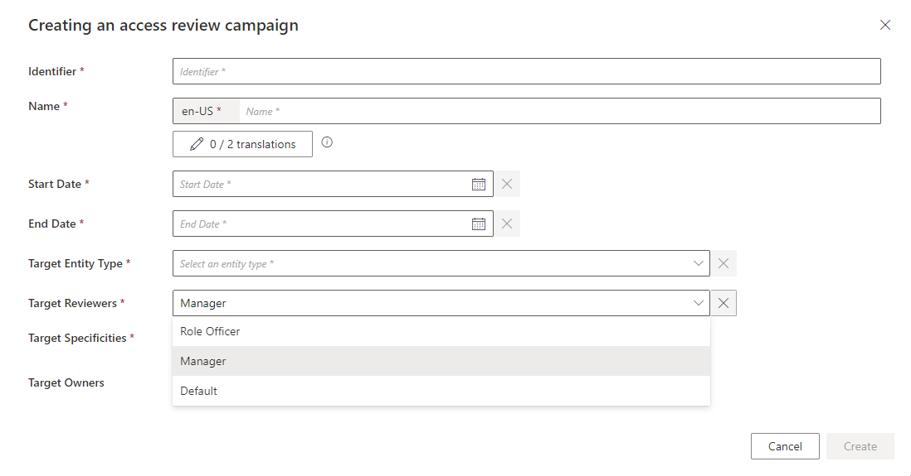

Access Certification
The Access Certification module enables chosen end-users to carry out assignment certification campaigns, which aim to certify assignments of entitlements.
Overview
The aim of an access certification campaign is to review specific entitlement assignments for specific identities, in order to certify them and express an audit opinion that justifies their necessity. So, for all relevant permissions, the idea is to specify if these assignments ought to be deleted or not.
There are several ways to arrange an access certification campaign. Among others, through filters you can choose to focus on:
- A certain category of roles
- A certain type of assignment
- Assignments not certified since a certain date
- Assignments presenting a certain level of risk. See the Manage Risks topic for additional information.
Identity Manager uses an access certification campaign to define the campaign's scope including:
- The start and end date of the campaign
- The group of entitlement assignments to be certified during the campaign.
Job for access certification
After the campaign's creation, access certification items are assigned to reviewers (Identity Manager end-users) by the CreateAccessCertificationJob, composed of the following tasks:
-
Identity Manager-Update-AccessCertificationCampaign simply applies the campaign's scope, determines which permissions are to be certified, by computing certification orders;
-
Identity Manager-Set-AccessCertificationReviewer assigns one review for each access certification item to end-users whose profile's scope of responsibility matches the entitlement to be certified;
-
Identity Manager-Send-AccessCertificationNotification sends notifications to concerned reviewers.
-
Identity Manager-Process-AccessCertificationItems processes the access certification item decisions and generates the corresponding deprovisioning orders.
Set up the Configuration
Configuring the Access Certification module entails:
- Setting up profiles to carry out the certification
- Configuring their scope of responsibility
- Enabling automatic and forwarded assignments of access certification items to end-users
Campaign creation
At least one Identity Manager profile needs permissions to create campaigns.
Such permission can be granted using the AccessReviewAdministrationAccessControlRules scaffolding. See the Access Review Administration Access Control Rules topic for additional information.
The administrator profile, created with CreateAdministratorProfile scaffolding, already has these permissions. See the Create Administrator Profile topic for additional information.
If you are not using the AccessReviewAdministrationAccessControlRules scaffolding, the user cannot query on dimensions when editing the owner filters, so you need to give the permissions on the correct contexts:
Code attributes enclosed with <> need to be replaced with a custom value before entering the script in the command line.
<AccessControlRule Profile="Administrator" EntityType="Dimension0" Identifier="Administrator_AccessCertificationCampaign_Dimension0" DisplayName_L1="Administrator_AccessCertificationCampaigns"> <Entry Permission="/AccessCertification/AccessCertificationCampaign/Create" /> <Entry Permission="/AccessCertification/AccessCertificationCampaign/Update" /></AccessControlRule>Profile scope of responsibility
The scope of responsibility of a profile is a set of criteria that defines which assignment of entitlements this profile will certify. For example, the Manager profile is responsible for reviewing entitlement assignments of identities working in their department.
A profile's scope of responsibility is configured by giving access, with access control rules, to a specific set of access certification items that match the profile's scope of responsibility criteria.
The option to display only the Approve or Deny buttons next to the Access Certification items can be configured by the administrator on the UI in the Settings>Features.
Example
This example shows how to set the scope of responsibility for the Manager profile.
Code attributes enclosed with <> need to be replaced with a custom value before entering the script in the command line.
<AccessControlRule Identifier="Manager_AccessCertificationItem_Custom_AccessCertification_AutoAssign_Directory_User"
DisplayName_L1="Organization Manager - Access certification auto assign"
EntityType="AccessCertificationItem"
Profile="Manager"> <Filter Binding="Owner.Directory_User:MainRecord.Organization.Id" Dimension="Organization0" /> ...
</AccessControlRule>The filter indicates that a review with the Manager profile can only access items for which the binding Owner.Directory_User:MainRecord.Organization.Id matches their dimension organization's value.
This example needs to be completed with either automatic assignment or manual assignment capabilities.
For certification items to be assigned to a profile, a permission context has to be added to the access control rule.
Access certification item assignments
Access certification items can be assigned to end-users via:
- Automatic assignments, computed by the reviewer-setting task when a given profile's scope of responsibility matches the entitlement to be certified
- Forwarded assignments, automatically assigned to an end-user, but then manually forwarded to another user from the UI
Automatic assignments
For a profile to be the target of an automatic assignment of an access certification item, it needs the /Custom/AccessCertification/AutoAssigned/{entityTypeName} permission.
Example
This example completes the previous one by adding the automatic assignment capabilities.
Code attributes enclosed with <> need to be replaced with a custom value before entering the script in the command line.
<AccessControlRule Identifier="Manager_AccessCertificationItem_Custom_AccessCertification_AutoAssign_Directory_User"
DisplayName_L1="Organization Manager - Access certification auto assign"
EntityType="AccessCertificationItem"
Profile="Manager"> <Filter Binding="Owner.Directory_User:MainRecord.Organization.Id" Dimension="Organization0" /> <Entry CanExecute="true" Permission="/Custom/AccessCertification/AutoAssigned/Directory_User" /></AccessControlRule>This example enables automatic assignments of access certification items that match the filter to end-users with the Manager profile.
If the filter criterion is matched for several end-users, only one is assigned the certification item, and this assignment is made randomly. Therefore, in order to have a cleaner reviewing architecture, it is recommended to carefully set the Filter attributes in the access control rules so that no two end-users' scope of responsibility overlap.
Forwarded assignments
The target profiles need the following /Custom/AccessCertification/ManualAssigned/{entityTypeName} permission.
The example below allows the Manager profile to be the target of forwarded assignments.
Code attributes enclosed with <> need to be replaced with a custom value before entering the script in the command line.
<AccessControlRule Identifier="Manager_AccessCertificationItem_Custom_AccessCertification_ManualAssign_Directory_User" DisplayName_L1="User - Access certification manual assign" EntityType="AccessCertificationItem" Profile="Manager"> <Entry CanExecute="true" Permission="/Custom/AccessCertification/ManualAssigned/Directory_User" /> </AccessControlRule>There is no filter so the Manager profile can certify all forwarded certification orders for the Directory_User entity type, regardless of his previously configured scope of responsibility.
It is recommended to have a larger scope for forwarded certification orders than for automatically assigned ones.
Certification policy
Scopes of responsibility can also be defined in terms of access certification campaign policy. See the AccessCertificationCampaignPolicy topic for additional information.
Assigning an access certification campaign policy to an access certification campaign allows the creation of campaigns dedicated specifically to one set of reviewers.
The following example creates a new policy named Manager.
Code attributes enclosed with <> need to be replaced with a custom value before entering the script in the command line.
<AccessCertificationCampaignPolicy Id="-2" Identifier="Manager" DisplayName_L1="Manager" DisplayName_L2="Responsable"/>It automatically appears on the campaign creation screen, and binds itself to the created campaign:

To use it, modify the access control rules by adding a filter on the campaign policy. See the Access Control Rule topic for additional information.
Example
Code attributes enclosed with <> need to be replaced with a custom value before entering the script in the command line.
<AccessControlRule
Identifier="Manager_AccessCertificationItem_Custom_AccessCertification_AutoAssign_Directory_User"
DisplayName_L1="Organization Manager - Access certification auto assign"
EntityType="AccessCertificationItem"
Profile="Manager"> <Filter Binding="Owner.Directory_User:MainRecord.Organization.Id" Dimension="Organization0" /> <Filter Binding="Campaign.Policy.Identifier" Value="Manager"/> <Entry CanExecute="true" Permission="/Custom/AccessCertification/AutoAssigned/Directory_User" /></AccessControlRule>In this example, the Manager profile is only able to certify items for a campaign defined with the Manager policy.
A default policy is already defined. If no filter is set when giving the permission, the policy is not considered.
Access certification item processing
Once entitlement assignments have been reviewed (accepted or rejected), the final step is to apply these decisions with the processing task, eventually denying assignments. This is done through the UI. See the Access Certification topic for additional information.
The user needs to have the correct permission to launch the item processing:
Code attributes enclosed with <> need to be replaced with a custom value before entering the script in the command line.
<AccessControlRule Profile="Administrator" EntityType="AccessCertificationCampaign" Identifier="Administrator_AccessCertificationCampaign_Process" DisplayName_L1="Administrator_AccessCertificationCampaigns"> <Entry Permission="/AccessCertification/AccessCertificationCampaign/Process" /></AccessControlRule>It is also possible to add access control filters when creating the permission set so that users can only access certain type of campaigns. See the Access Control Rule
This permission also is given by the AccessReviewAdministrationAccessControlRules scaffolding. See the Access Review Administration Access Control Rules topic for additional information.